Data Centre Cleaning · Brisbane, QLD · Nationally Available
Data centre contamination specialists.
HEPA-grade decontamination and zinc whisker remediation for mission-critical environments. Every job signed off by your authorised representative before we leave the site.
Priority enquiries 0411 778 952enterprise
& telco sectors served across Australia
What we do
Seven specialist services. One non-negotiable standard: HEPA-grade, every time.
Data Centre
Decontamination
Full HEPA-grade decontamination of live and offline data centres and communications rooms. We use only antistatic equipment and HEPA-filtered vacuums. No soapy water, no general cleaning contractors. We work around your operational requirements and leave when your representative signs the job sheet.
Live environment safe 02Zinc Whisker
Remediation
Zinc whiskers are microscopic conductive fibres that grow from zinc-coated surfaces and cause intermittent short circuits in data centre equipment. Most facilities don't know they have them until hardware starts failing without explanation. We identify contamination, contain the affected area, and remediate without redistributing particles through your airflow system.
Specialised identification 03Post-Construction
Decontamination
After building or renovation work in or adjacent to a critical environment, construction dust and particulates contaminate every surface. We perform systematic decontamination to bring the facility back to operational standards before equipment is powered on or data centre operations begin. Essential before commissioning any new or refurbished data hall.
Pre-commissioning clean 04Electrical &
Electronic Equipment
Network equipment, telecommunications infrastructure, office machines, and multi-user devices accumulate contamination and bacteria rapidly. Most equipment is never professionally cleaned. Dust loads affect cooling and component longevity. Bacterial contamination on high-touch surfaces contributes to workplace illness and absenteeism. We clean network switches, routers, telecommunications equipment, photocopiers, printers, POS terminals, and specialist equipment using controlled methods and HEPA-filtered equipment.
Equipment contamination 05Ceiling Void
Cleaning
Ceiling voids are a primary entry point for dust and particulates into the controlled environment below. We clean above-floor spaces, cable runs, and ceiling plenum areas using HEPA-filtered equipment and containment protocols designed to prevent dislodged contamination from entering the data hall during the cleaning process.
Above-floor containment 06Technical
Restoration
Post-fire suppression discharge, flood, or severe contamination event recovery. We assess the extent of contamination, document our findings, and perform systematic restoration to return equipment and the facility to operational condition. We also service individual server internals, electrical and electronic equipment, and office equipment requiring technical cleaning.
Incident recovery 07Commercial Kitchen
Remediation
When a food service establishment is shut down by health inspectors for severe violations including cockroach infestation, heavy grease accumulation, and pathogen contamination, reopening requires more than a standard clean. We perform top-to-bottom biohazard-grade remediation: industrial degreasing of hoods, ducts, and line equipment; surface sanitisation to commercial food-safety standards; and full before-and-after documentation for the re-inspection file. High-value branches and franchises receive priority scheduling outside standard hours so downtime is minimised. We come in, we remediate, we document. You open.
Priority schedulingBefore & after
Drag to compare. The difference proper decontamination makes. Every job, documented.
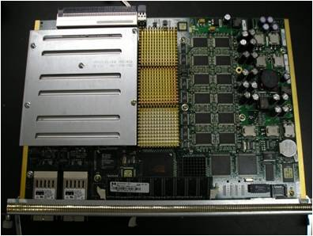
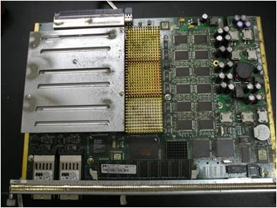
Network switch decontamination
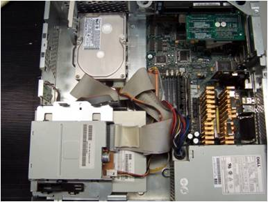
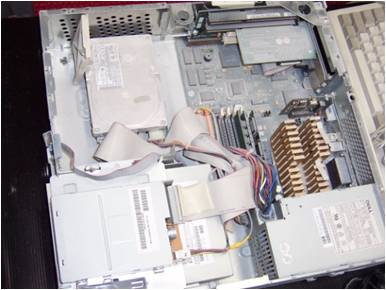
Workstation internal decontamination
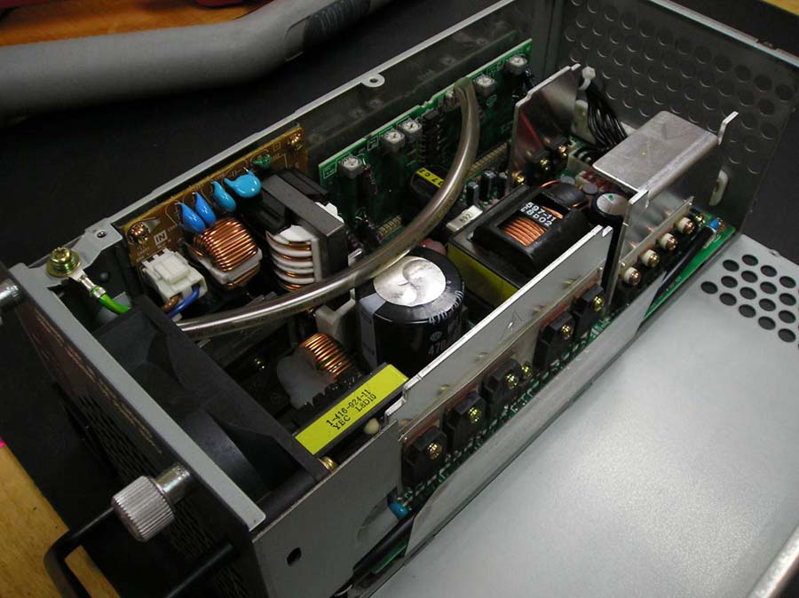
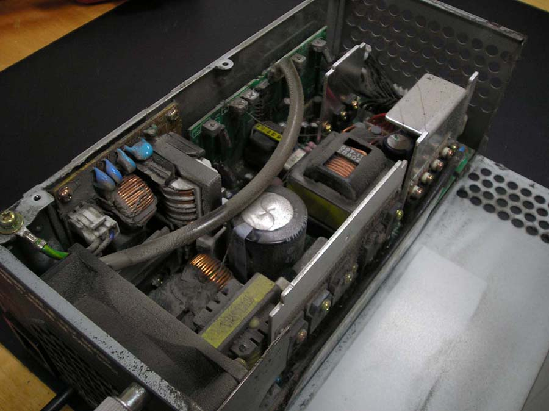
Server power supply restoration


Motherboard decontamination


Fire damage restoration


Water damage remediation
What contamination actually looks like
Real data centre environments. The kind of buildup most facilities never inspect.
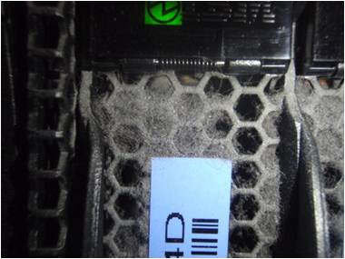
01 Blade server contamination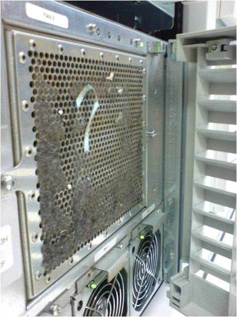
02 Server inlet blockage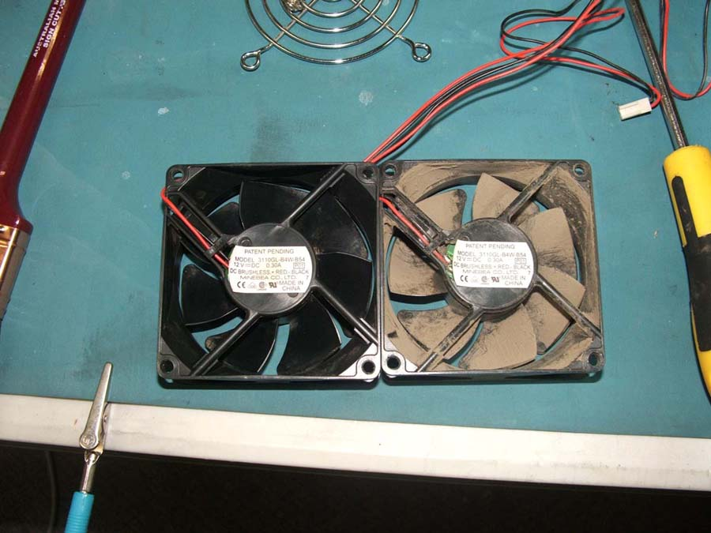
03 Fan contamination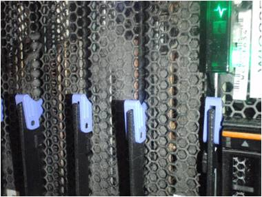
04 Contamination close-up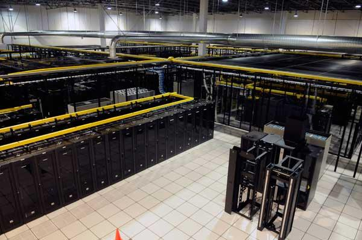
05 Data centre environment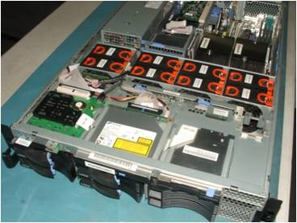
06 Post-clean: HEPA gradeHow we work
Four stages. No surprises. Signed off at the end.
-
A
Assessment
On-site contamination audit. We inspect the facility, identify contamination sources, and document the full scope before a single piece of equipment is touched.
-
B
Protocol
Tailored cleaning plan. VESDA suppression systems are isolated, airflow is mapped, and every procedure is agreed with your team in writing before work begins.
-
C
Execution
HEPA-grade decontamination using antistatic equipment only. We work systematically, contain all contamination, and document what we find and what we do throughout.
-
D
Sign-Off
The job is not complete until your authorised representative inspects the finished work and signs the job sheet. You are satisfied, or we are not done.
Why Priority
Data Services?
We are an Australian business with over 10 years of specialist experience in data centre and communication room decontamination. Our staff are trained and qualified to work in critical live environments for clients including government departments, financial institutions, law firms, telecommunications companies, electricity providers, mining organisations, and major IT companies.
The data centre cleaning market has a problem: too many general cleaning contractors work in specialist environments they don't understand. The result is contamination redistributed through airflow systems, static discharge from unqualified personnel, and documentation that tells you nothing useful when auditors ask.
We do one thing. We do it properly. When it is done, your representative signs off before we leave.
Priority Data Services, Brisbane, QLD
Contamination incident?
Priority Response Available
Fire suppression discharge, post-flood recovery, or critical environment breach. Call us directly to discuss your situation and we will be straight with you about what can be arranged and when.
Common questions
What facilities managers and IT teams ask us most often.
Why can't general cleaners work in data centres?
General cleaning equipment uses synthetic filters that capture particles down to around 2.5 microns. Data centre contamination includes particles as small as 0.3 microns. Standard vacuum cleaners also recirculate what they capture back into the air. HEPA-filtered specialist vacuums capture 99.97% of particles at the 0.3 micron threshold, the standard required for electronic environments.
How often should a data centre be cleaned?
A minimum of twice per year for most operational environments, more frequently in facilities with high traffic, nearby construction, or elevated ambient dust. We assess each facility individually and recommend a maintenance schedule based on the contamination load we find during the initial assessment.
Can you work in live environments with operational equipment?
Yes. We are trained and equipped to work in live data centre environments. We use antistatic equipment and procedures throughout. For certain cleaning tasks, individual components may need to be powered down temporarily. This is agreed in the protocol stage before any work begins. VESDA suppression systems are always isolated before work starts.
What is zinc whisker contamination?
Zinc whiskers are microscopic crystalline structures that grow spontaneously from electroplated zinc surfaces, typically raised access floor tiles and structural components installed before 1995. They break off as invisible particles that float through data centre airflow, land on circuit boards, and cause intermittent short circuits. They are frequently diagnosed incorrectly as software or hardware faults before the contamination source is identified. We are specialists in zinc whisker identification and remediation.
What does the satisfaction sign-off guarantee mean?
The job is not considered complete until an authorised representative from your organisation performs a physical inspection of the agreed works and signs off the job sheet. If you are not satisfied with any aspect of the work, we address it before we leave. This gives you documented evidence that the facility was cleaned to the agreed standard, which matters for audits, insurance, and operational records.
What industries do you work in?
Our clients include government departments, financial and insurance institutions, law firms, telecommunications companies, electricity providers, mining organisations, hospitals and healthcare facilities, and major IT companies. Any organisation operating a data centre or critical communications room is a potential client, the requirement for specialist decontamination exists across all sectors.
How do I book a service or get a quote?
Contact us directly by phone or email. We work on a scheduled basis, with regular on-site visits to Brisbane each year for institutional and government clients. For new clients, we typically start with a site assessment to understand the scope before providing a quote. Early engagement means we can plan your work into the next available visit. Contact us at info@prioritydataservices.com.au or 0411 778 952.
Do you provide documentation after the work is done?
Yes. Every job produces a documented job sheet that is signed off by your authorised representative on completion. This provides a formal record of what was inspected, what was found, and what work was performed. This documentation is relevant for compliance, asset maintenance records, insurance purposes, and internal audit requirements.
What equipment do you use, and is it safe for sensitive electronics?
We use HEPA-filtered vacuums rated to capture particles at 0.3 microns, antistatic brushes and cloths, and ESD-safe (electrostatic discharge safe) tools throughout. None of our cleaning processes introduce moisture or solvents into live electronic environments. Standard janitorial equipment, even commercial-grade, is not appropriate for data centre use and we do not use it.
Can contamination cause equipment failure or data loss?
Yes, directly. Particulate contamination restricts airflow through server inlets, causing thermal throttling and accelerated component failure. Conductive particles such as zinc whiskers can bridge circuit board contacts and cause intermittent short circuits that are difficult to diagnose. In extreme cases, contamination causes outright hardware failure. Preventative decontamination on a regular schedule is substantially less expensive than unplanned downtime or emergency hardware replacement.
Do you do commercial kitchen remediation, or only data centres?
We also perform commercial kitchen remediation for food service establishments shut down by health inspectors. When a venue faces severe violations such as pest infestation, heavy grease accumulation, or pathogen contamination, reopening requires biohazard-grade remediation, not a standard clean. We handle industrial degreasing of hoods, ducts, and line equipment; surface sanitisation to commercial food-safety standards; and full before-and-after documentation for the re-inspection file. High-value branches and franchises receive priority scheduling outside standard hours to minimise downtime.